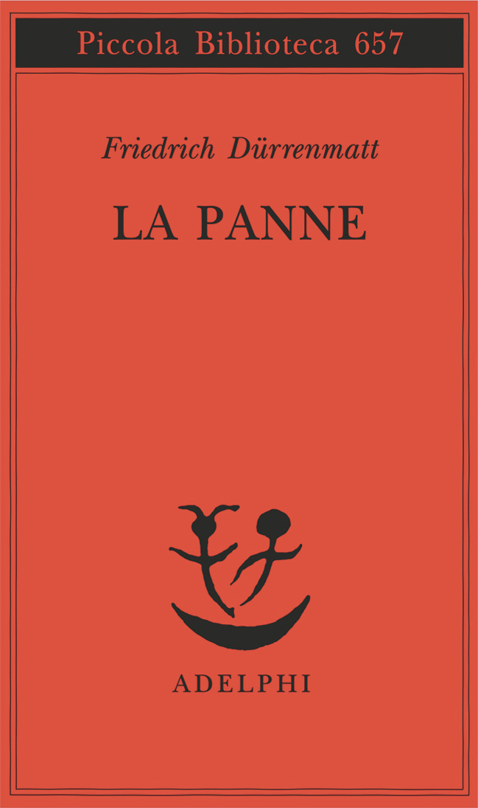
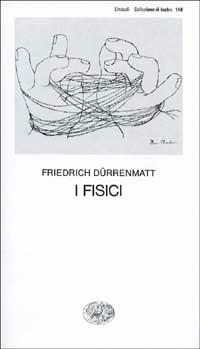
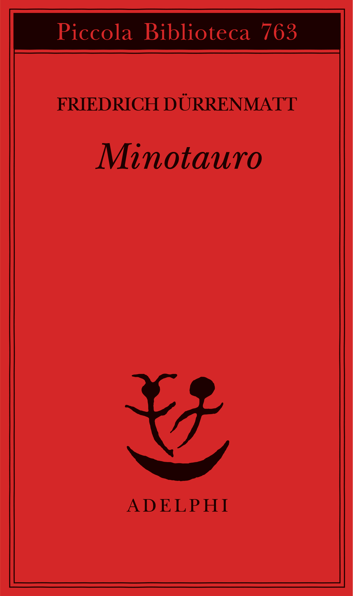
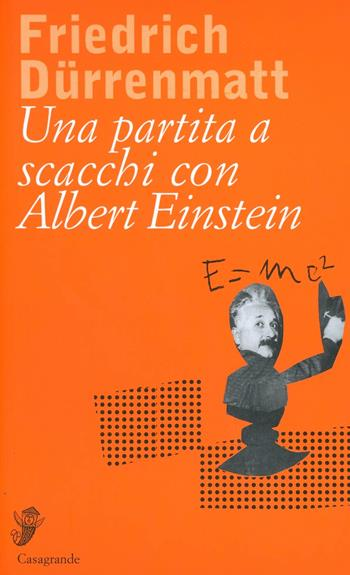
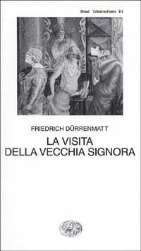

33:57 · 10 OPERE
Friedrich Dürrenmatt, "La panne. Una storia ancora possibile".
Il filo del discorso
La panne di Friedrich Dürrenmatt offre a Dr Divago un modo per interrogare la distanza fra ciò che la legge permette e ciò di cui una persona risponde moralmente. Dopo un’introduzione ad altri testi dello scrittore svizzero, il relatore legge e commenta l’apertura del racconto: la rinuncia all’autobiografismo, il destino che sembra scomparire e gli incidenti prodotti dall’organizzazione tecnica del mondo. La vicenda del rappresentante Alfredo Traps, accolto da ex uomini di legge che inscenano processi per passatempo, diventa un esame di comportamenti ordinari capaci di danneggiare gli altri senza apparire a chi li compie come colpe. Il confronto con La più bella serata della mia vita di Scola sottolinea il valore che il relatore attribuisce all’adattamento cinematografico. Seguono una discussione polemica di Arendt e un richiamo alla questione della colpa di Jaspers. Nella conclusione la conversazione conviviale è letta come un percorso di riconoscimento: la letteratura può riaprire il giudizio e la coscienza proprio dove successo materiale, abitudine e conformismo li hanno resi opachi.
I libri nel discorso

La panne. Una storia ancora possibile
Copertina: Adelphi, Piccola Biblioteca Adelphi 657, 2014; traduzione Eugenio Bernardi, cura Roberto Cazzola.
Immagine autentica dell’opera, controllata visivamente; l’edizione di riferimento non è attribuita al filmato.
La panne è il titolo centrale, letto e commentato durante tutto il video.
Passaggio 0:09 ↗ · Fonti e libro ↗
I fisici
Copertina: Einaudi, Collezione di teatro 148, terza edizione 1997, a cura di Aloisio Rendi.
Immagine autentica dell’opera, controllata visivamente; l’edizione di riferimento non è attribuita al filmato.
I fisici nominato fra i testi dell’autore.
Passaggio 0:48 ↗ · Fonti e libro ↗
Minotauro
Copertina: Adelphi, Piccola Biblioteca Adelphi 763, 2021; traduzione Donata Berra, testo a fronte e illustrazioni dell’autore.
Immagine autentica dell’opera, controllata visivamente; l’edizione di riferimento non è attribuita al filmato.
Minotauro nominato fra gli altri lavori di Dürrenmatt.
Passaggio 1:27 ↗ · Fonti e libro ↗
Una partita a scacchi con Albert Einstein
Copertina: Casagrande, 2005, traduzione di Andrea Michler, 60 pagine.
Immagine autentica dell’opera, controllata visivamente; l’edizione di riferimento non è attribuita al filmato.
Una partita a scacchi con Albert Einstein e l’editore Casagrande esplicitamente richiamati.
Passaggio 1:46 ↗ · Fonti e libro ↗
La visita della vecchia signora
Copertina: Einaudi, Collezione di teatro 312, edizione 1997.
Immagine autentica dell’opera, controllata visivamente; l’edizione di riferimento non è attribuita al filmato.
La visita della vecchia signora nominata discutendo il nome del protagonista.
Passaggio 3:14 ↗ · Fonti e libro ↗
La banalità del male. Eichmann a Gerusalemme
Copertina: Feltrinelli · Universale Economica Saggi · 2023
Immagine autentica dell’opera, controllata visivamente; l’edizione di riferimento non è attribuita al filmato.
Arendt, processo Eichmann e La banalità del male esplicitamente discussi.
Passaggio 17:57 ↗ · Fonti e libro ↗
Bibbia
Identificazione probabile
Copertina: San Paolo, 2014 · Nuova Versione dai Testi Antichi · edizione di riferimento
Richiamo evangelico al perdere la vita per ritrovarla; passo preciso non fissato fra i paralleli evangelici.
Passaggio 23:41 ↗ · Fonti e libro ↗
La questione della colpa
Identificazione probabile
Copertina: Raffaello Cortina
Karl Jaspers e la questione della colpa del dopoguerra: titolo italiano non scandito, identificazione probabile del saggio del 1946.
Passaggio 25:18 ↗ · Fonti e libro ↗
Le avventure di Pinocchio. Storia di un burattino
Identificazione probabile
Copertina: Gangemi · illustrato da Franco Staino, 2009
Immagine autentica dell’opera, controllata visivamente; l’edizione di riferimento non è attribuita al filmato.
Pinocchio e il Grillo come immagine della coscienza; riferimento riconoscibile al racconto di Collodi.
Passaggio 27:41 ↗ · Fonti e libro ↗
Critica della ragion pratica
Copertina: Bompiani, 2000
Kant e la chiusura della Critica della ragion pratica esplicitamente richiamati.
Passaggio 31:08 ↗ · Fonti e libro ↗